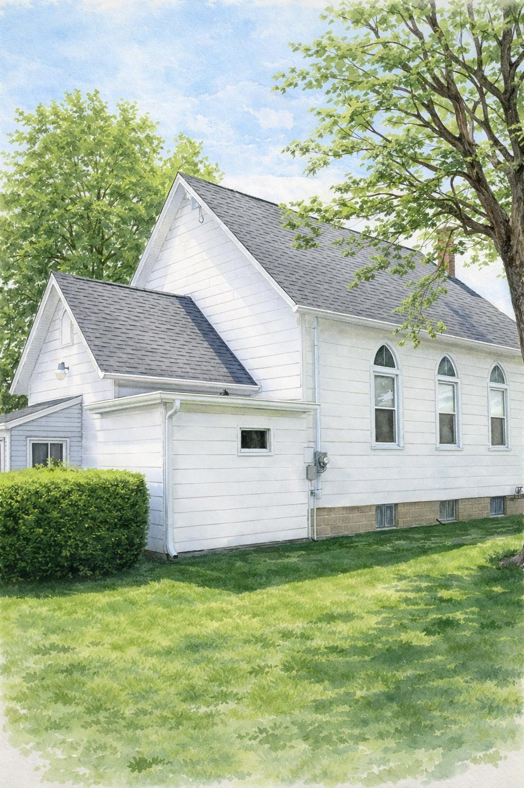
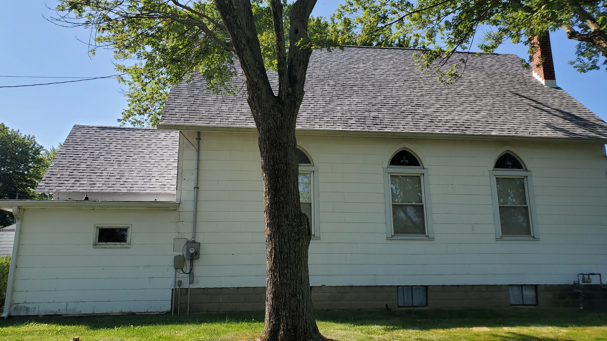

Fellowship
Mt. Carmel Church enjoys regular fellowship with sister Primitive Baptist Churches in Central Indiana.
Fifth Sunday meetings rotate between Harmony Primitive Baptist Church and Mt. Carmel Primitive Baptist Church.

Church Directory

Harmony Primitive Baptist Church (Org. 1834)
1st and 3rd Sundays at 10:30 AM
Intersection of S. Wheeling Pike and E. 1125 S.
Matthews, Indiana
Directions (Click for Google Maps)
Located 3/4 mile northwest of Matthews, Indiana on Wheeling Pike. From the junction of Interstate 69 and State Road 26, travel east to the four-way stop. Turn right and continue approximately 2 miles. The church is on the left.
For GPS use 11191 S. Wheeling Pike, Fairmount, IN

Lebanon Primitive Baptist Church (Org. 1828)
2nd and 4th Sundays at 10:30 AM
306 South Walnut Street
Mt. Summit, Indiana

Mt. Carmel Primitive Baptist Church (Org. 1837)
1st Sunday at 10:30 AM
9654 N Fortville Pike
Fortville, IN 46040
Fifth Sunday Meetings
Fifth Sunday meetings rotate between Harmony Primitive Baptist Church and Mt. Carmel Primitive Baptist Church.